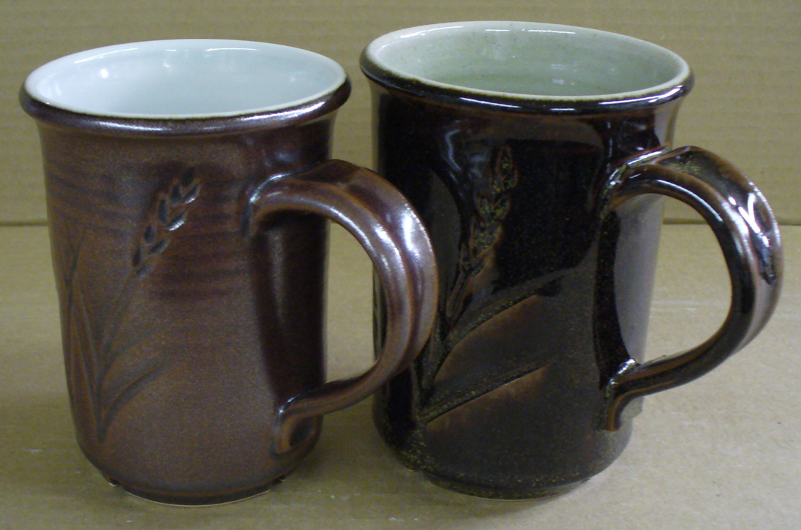
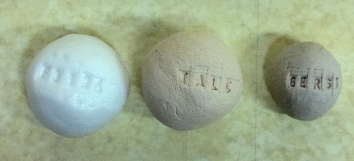
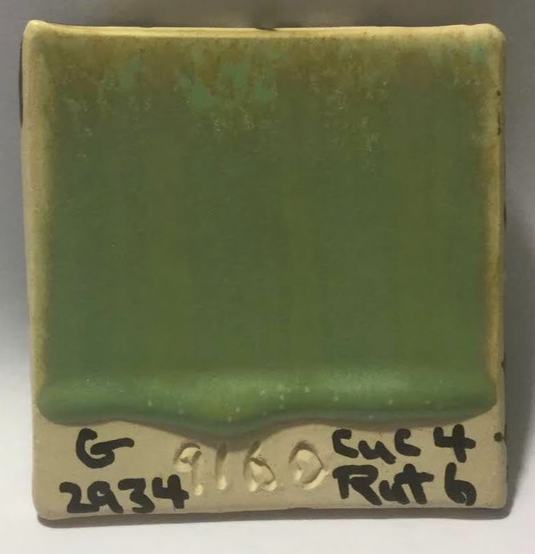
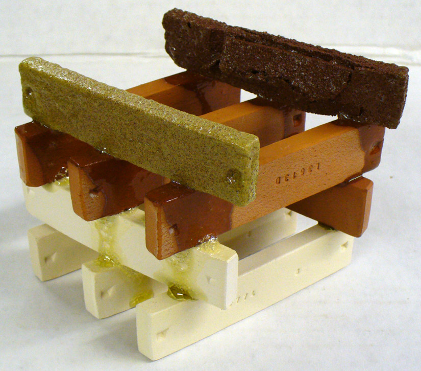
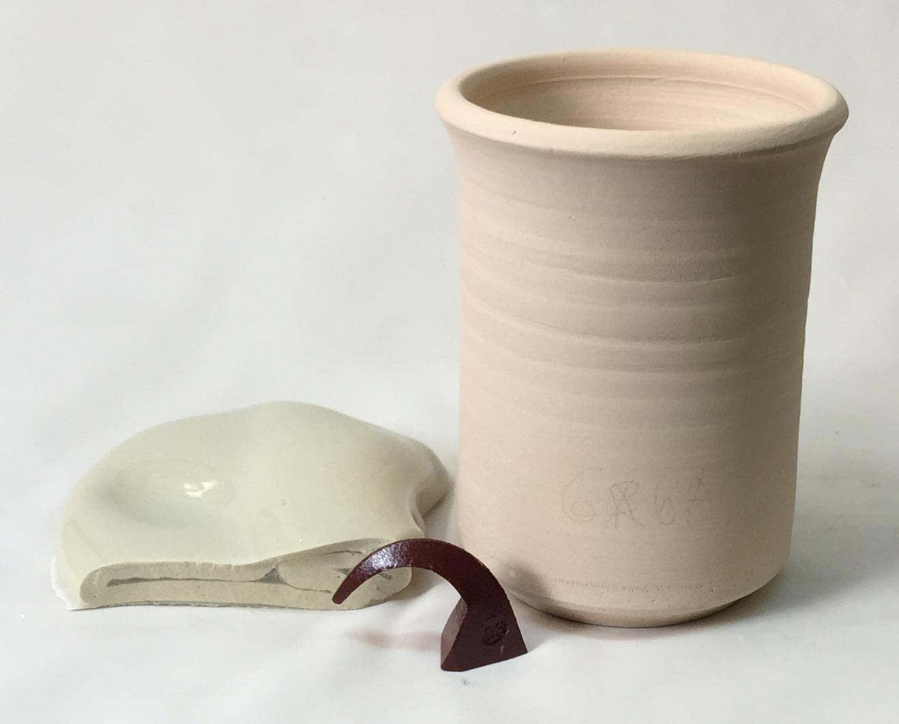

Flux
Fluxes are the reason we can fire clay bodies and glazes in common kilns, they make glazes melt and bodies vitrify at lower temperatures.
Key phrases linking here: fluxed, flux - Learn more
Details
On the theoretical glaze chemistry level, a flux is an oxide that lowers the melting or softening temperature of a mix of materials. Fluxes are interactors (they often melt poorly on their own but react strongly with high melting materials where Al2O3/SiO2 predominate). There are less than ten common fluxes that we need to be concerned with. When we discuss them, we are talking about specific oxides (not powdered materials). Fluxes are sourced by the materials in the recipe, they are "swimming around" in the glaze melt during firing, making it fluid, giving it the ability to dissolve other particles within and without.
During firing, fluxes interact with the surface molecular structure of raw and refined materials and pull them away (dissolve them) molecule-by-molecule. Glaze chemistry considers how each of the oxides, as individuals, impose their properties on the glass (is assumes they have all melted or dissolved). But it also tries to understand how they interact with each other (e.g. sometimes combinations of fluxes react much more than logic would expect). Normally, the more kinds of fluxes present in a mix the lower its melting temperature (called the 'mixed oxide effect'). Interactions between fluxing oxides trigger on percentages, identities and mixtures of identities, temperature and kiln atmosphere (it is a a lifetime of study).
Glazes made from raw materials that source fluxing oxides (like feldspar, calcium carbonate, talc, dolomite) have flux balances that mirror what is common in rocks on the planet. These melt well at high stoneware temperatures. If we add Gerstley borate or Colemanite (which introduce B2O3) and metal oxides and carbonates (like zinc, lithium, strontium) it is possible to move melting temperatures way down and create a broader range of effects. Finally, by adding frits (artificial materials which release their fluxes more readily and that offer proportions that cannot be achieved with common materials) we can lower temperature even further and create very novel effects. Generally it is best to use as many fluxes in a glaze a possible, both to benefit from the mixed-oxide-effect, and have more options to adjust and tune the recipe.
In common glazes, the fluxing oxides comprise a minor percentage (compared to SiO2 and Al2O3). A high temperature (1300C) stoneware glaze might have 18% fluxes. A middle-fire (1180C) stoneware might contain 22%. A low fire glaze might have 30% flux (including B2O3). This is a narrower range of percentages than one would expect, but we can explain it by the varying potency of the fluxing oxides and the fact that certain oxides predominate in each temperature range. Of course, certain fluxes are supplied by materials that are much more expensive than others.
B2O3 is a special-case flux. It acts as low melting glass (it does not depend on percentage and interaction to activate). It works across the entire temperature range used in traditional ceramics. Much of the ceramic industry would not exist without this valuable oxide. Almost all frits contain at least some B2O3. It is common to see 15% B2O3 in low fire glazes. At middle temperature, 5% B2O3 is common (reactive glazes could have more). But if ZnO and significant KNaO are present, B2O3 could be around 2%. In high fire glazes there is almost always zero boron.
PbO is also a special case since, although it is a highly effective melter at low temperatures, it is no longer used in most circles because of toxicity concerns.
Li2O and ZnO are strong fluxing oxides, they work well at lower temperatures (but must be used judiciously at higher ones to avoid over melting and volatilization). Glazes employ fairly small amounts of these in combination with other fluxes (except for some zero-boron glazes that employ zinc as the power-melter). Over supplying either of these, especially at higher temperatures, can result in radical changes in color and surface characteristics. In stoneware and porcelain glazes it is common to see zero ZnO and LiO2.
At higher temperatures a new set of fluxes burst onto the scene: K2O and Na2O (commonly deemed KNaO), CaO, BaO, SrO, MgO. Although you will find these oxides in glazes at all temperatures, they are much less active at the lower. An exception is KNaO, very active at all ranges but restricted in the amount allowable because of its high thermal expansion (KNaO is very effective at fostering high gloss and brilliant colors). CaO is the most common fluxing oxide found at all temperature ranges (commonly 5-10% of the total). Actually, that is not entirely true. Although it reacts strongly (is very effective) at high temperatures, it is simply present in lower fire glazes, acting more as an intermediate (in fact, it can be a matting agent at low fire). CaO is just there. It is in the raw materials and frits we use (it is in the rocks on this planet). It is not a troublesome oxide (unless in very high amounts where it mattes by crystallizing). MgO is also common in glazes (since dolomite and talc, its sources, are so commonly used). MgO has very low thermal expansion, trading it against higher expansion fluxes is an effective way to deal with crazing. Using it as a predominant flux at middle and high temperatures produces a silky matte surface (while still melting well). SrO and BaO are used in smaller amounts (the latter normally for special colors or to produce micro-crystalline matte surfaces).
Colorants can also be powerful fluxes. Copper, cobalt and manganese all melt very actively in oxidation and reduction. However iron, a refractory material in oxidation, is a strong flux in reduction.
When the term flux is used on the material level, it is referring to the fact that the chemistry of the material contributes a significant amount of one or more of the fluxing oxides. Feldspar is an excellent example of a natural mix of refractory SiO2 and Al2O3 and fluxing oxides that, together, melt at a fairly low temperature. However, raw materials commonly as glazes fluxes, do not always melt well by themselves. Dolomite, like calcium carbonate, is a stoneware glaze fluxing material. But by itself it can be dead-burned and used as a heavy duty refractory for ladles and slag furnaces! Talc, in small percentages in middle temperature clay bodies, acts as a strong flux. However in large percentages, it is refractory also. Calcium carbonate is another example. While being a strong glaze flux at higher temperatures, it is refractory in a 75:25 plastic mix with bentonite (where the conditions for interaction to produce a glass are not present).
Fluxing oxides in frits melt much better than in raw materials. MgO is an excellent example. Glazes that employ a frit to supply the MgO melt much better than those employing dolomite or talc. SrO is a similar story.
Understandably, predicting the effects of a flux addition to a glaze (e.g. melting temperature) is very complex (involving interactions, eutectics, proportions, premelting, atmostphere and the physical and mineralogical properties of the particles). For this reason, glaze chemistry is applied much more in a relative sense than absolute to predict melting temperature.
Related Information
Add 5% calcium carbonate to a tenmoku. What happens?

This picture has its own page with more detail, click here to see it.
In the glaze on the left (90% Ravenscrag Slip and 10% iron oxide) the iron is saturating the melt crystallizing out during cooling. GR10-K1, on the right, is the same glaze but with 5% added calcium carbonate. This addition is enough to keep most of the iron in solution through cooling, so it contributes to the super-gloss deep tenmoku effect instead of precipitating out.
Firing shrinkage variation between various clays

This picture has its own page with more detail, click here to see it.
Example of various materials mixed 75:25 with volclay 325 bentonite and fired to cone 9. Plasticities and drying shrinkages vary widely. Materials normally acting as fluxes (like dolomite, talc, calcium carbonate) are refractory here because they are fired in the absence of materials they react normally with.
Frits work much better in glaze chemistry

This picture has its own page with more detail, click here to see it.
The same glaze with MgO sourced from a frit (left) and from talc (right). The glaze is 1215U. Notice how much more the fritted one melts, even though they have the same chemistry. Frits are predictable when using glaze chemistry, it is more absolute and less relative. Mineral sources of oxides impose their own melting patterns and when one is substituted for another to supply an oxide in a glaze a different system with its own relative chemistry is entered. But when changing form one frit to another to supply an oxide or set of oxides, the melting properties stay within the same system and are predictable.
How do metal oxides compare in their degrees of melting?

This picture has its own page with more detail, click here to see it.
These metal oxides have been mixed with 50% Ferro frit 3134 and fired to cone 6 oxidation. Chrome and rutile have not melted, copper and cobalt are extremely active melters, frothing and boiling. Cobalt and copper have crystallized during cooling. Manganese has formed an iridescent glass.
At 1550F Gerstley Borate suddenly shrinks!

This picture has its own page with more detail, click here to see it.
These GBMF test balls were fired at 1550F and were the same size to start. The Gerstley Borate has suddenly shrunk dramatically in the last 40 degrees (and will shrink even more and then suddenly melt down flat within the next 50). The talc is still refractory, the Ferro Frit 3124 slowly softens across a wide temperature range. The frit and Gerstley Borate are always fluxes, the talc is a flux under certain circumstances.
Frits melt so much better than raw materials

This picture has its own page with more detail, click here to see it.
Feldspar and talc are both flux sources (glaze melters), they are common in all types of stoneware glazes. But their fluxing oxides, Na2O and MgO, are locked in crystal structures that neither melt early or supply other oxides with which they like to interact. The pure feldspar is only beginning to soften at cone 6. Yet the soda frit is already very active at cone 06! As high as cone 6, talc (the best source of MgO) shows no signs of melting activity at all. But a high-MgO frit is melting beautifully at cone 06! The frits progressively soften, starting from low temperatures, both because they have been premelted and have significant boron content. In both, the Na2O and MgO are free to impose themselves as fluxes, actively participating in the softening process.
2% Copper carbonate in two cone 6 transparents:
One does not bubble and orange-peel. Why?

This picture has its own page with more detail, click here to see it.
The top base glaze, G2926B, has enough melt fluidity to produce a brilliant functional gloss when used as a transparent. However, for this 2% copper carbonate addition, it has too little melt fluidity and/or too much surface tension to merge, pass and heal the entrained micro-bubbles (generated by the decomposition of the carbonate).
The lower glaze, G3806B, diversifies the fluxes (half the B2O3 in exchange for more Na2O and introduction of SrO and ZnO) and increases their total compared to Al2O3 and SiO2. The result is a more fluid cone 6 melt having lower surface tension. The mixed-oxide effect is also a factor here; the diversity itself improves the melt.
The above factors are enough to solve the problem here. But more can be done. More zinc (in exchange for KNaO) could produce later melting, especially in combination with sourcing some or all of the latter from a feldspar instead of the low-melting frit. The benefit would enable more gas escape until melt-sealing (and reduce the COE).
Why pure stain powders make poor inks, slips, underglazes and overglazes

This picture has its own page with more detail, click here to see it.
On the left are pure blue stain brush strokes, on the right are green ones (both painted over a glaze). Clearly, the green is refractory, stiffening the glaze enough to trap bubbles and sit on the surface as a dry, unmelted layer. The blue is the opposite, melting and bleeding profusely into the glaze. Under the glaze, these problems would be magnified (the blue bleeding more, the green causing crawling and blistering). Stains are not ceramic, they are ceramic additives. Stains are not safe for direct food contact. Stains are expensive. Stains don't suspend in water, paint poorly and dry as a lose powder. These stains each need to be added, as a minor percentage, to a ceramic painting medium (one with CMC gum and a mix of ceramic materials tailored to melt to the desired degree and have a compatible chemistry for develop the color (as per manufacturer guidelines).
Copper oxide (2%) in an otherwise stable cone 6 oxidation glaze fluxes it

This picture has its own page with more detail, click here to see it.
Copper fluxes a matte glaze at cone 6

This picture has its own page with more detail, click here to see it.
4% copper carbonate and 6% rutile have been added to G2934 cone 6 matte base. Using a green stain should prevent this. Or some B2O3 could be substituted with SiO2 (via glaze chemistry).
The amazing fluxing power of boron (in borax)

This picture has its own page with more detail, click here to see it.
The two top clay bars contain 15% hydrous borax. At cone 06, a very low temperature, it has already melted and drained out of the bars, running down over the others as a glass.
A highly fluxed body, when over fired can do this!

This picture has its own page with more detail, click here to see it.
These two mugs are made from the same material: Ravenscrag Slip plus 20% Ferro Frit 3134. The one on the right has been bisque fired to 1550F. The one on the left has been clear glazed and fired to cone 03 (1950F). That means that this body vitrifies well below cone 03, likely well below cone 06. Thus strength, maturity, vitrification are not a matter of temperature, they are a matter of how much flux is available in the body to mature it to a dense, strong matrix.
Iron oxide goes crazy in reduction

This picture has its own page with more detail, click here to see it.
Cone 6 iron bodies that fire non-vitreous and burn tan or brown in oxidation can easily go dark or vitreous chocolate brown (or even melting and bloated in reduction). On the right is Plainsman M350, a body that fires light tan in oxidation, notice how it burns deep brown in reduction at the same temperature. This occurs because the iron converts to a flux and the glass development that occurs brings out the dark color. On the left is Plainsman M2, a raw high iron clay that is quite vitreous in oxidation, but in reduction it is bloating badly. When reduction bodies are this vitreous there is a much great danger of black coring.
Trying to avoid knowing anything about glaze chemistry? Be ready for drama!

This picture has its own page with more detail, click here to see it.
Maybe you don't think it is necessary to know anything about glaze chemistry to be a potter. Or a technician at a production facility. This thinking depends on how much mystery you mind tolerating. Because the reason for many of the problems you will encounter with glazes relates fundamentally to their chemistry. Perhaps you have other "social" actors in your sphere who also specialize in the "know as little technical stuff as possible" mindset. Who treat glazes like acrylic paint that comes in tubes - it is just color! From these people, you will get buying advice on expensive jars of tacky-looking "goop" that you have to laboriously paint on in layers. Or it will mean you'll be more likely to get trapped on the recipe treadmill, addicted to the traffic of recipes that never seem to work.
Inbound Photo Links
 Stains having varying fluxing effects on a host glaze |
Links
| Typecodes |
Flux Source
Materials that source Na2O, K2O, Li2O, CaO, MgO and other fluxes but are not feldspars or frits. Remember that materials can be flux sources but also perform many other roles. For example, talc is a flux in high temperature glazes, but a matting agent in low temperatures ones. It can also be a flux, a filler and an expansion increaser in bodies. |
| Glossary |
Refractory
In the ceramic industry, refractory materials are those that can withstand a high temperature without deforming or melting. Or can be sintered into super materials. |
| Glossary |
Frit
Frits are used in ceramic glazes for a wide range of reasons. They are man-made glass powders of controlled chemistry with many advantages over raw materials. |
| Glossary |
Limit Formula
A way of establishing guideline for each oxide in the chemistry for different ceramic glaze types. Understanding the roles of each oxide and the limits of this approach are a key to effectively using these guidelines. |
| Oxides | CaO - Calcium Oxide, Calcia |
| Oxides | K2O - Potassium Oxide |
| Oxides | Li2O - Lithium Oxide, Lithia |
| Oxides | Na2O - Sodium Oxide, Soda |
| Oxides | MgO - Magnesium Oxide, Magnesia |
| Oxides | SrO - Strontium Oxide, Strontia |
| Oxides | BaO - Barium Oxide, Baria |
| Oxides | B2O3 - Boric Oxide |
| Oxides | ZnO - Zinc Oxide |
| Troubles |
Runny Ceramic Glazes
Glazes of high melt fluidity are likely to run if applied to thickly or have not catcher glaze |
| Articles |
What Determines a Glaze's Firing Temperature?
The oxides contributed by glaze materials determine its chemistry. The chemistry is the main factor determining melting behaviour. But the particle sizes, shapes and mineralogies also come in to play. |
 PayPal | No tracking, No ads, No paywall, No transient content! Just organized, concise information constantly updated and improved. Was this helpful? Consider supporting me. |
| By Tony Hansen Follow me on        |  |
Got a Question?
Buy me a coffee and we can talk 

https://digitalfire.com, All Rights Reserved
Privacy Policy